附加品
共 981 个附加品 · 第 1/7 页
| 名称 | 稀有度 | 效果 | 所属 |
|---|---|---|---|
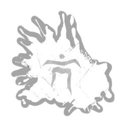 “全视”·血 "All Seeing" - Blood |
传说 | 代表至高实体庇佑我们的 Kra-Frabai 符号，以鲜血印刻在铃铛顶端。处于隐身状态时解锁你读取光域的能力：可感知 8 米范围内的光域。 | 幽灵 |
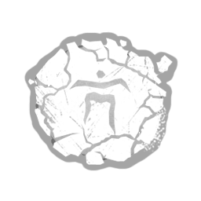 “全视”·泥 "All Seeing" - Mud |
罕见 | 图标 描述 费用 本附加内容已下架（该解锁内容过去已被移除，现已不存在于游戏中。）代表至高实体庇 | 幽灵 |
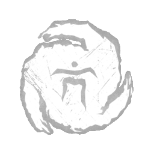 “全视”·魂 "All Seeing" - Spirit |
活动 | 代表至高实体庇佑我们的 Kra-Frabai 符号，在铃铛顶端散发着诡异的光芒。处于隐身状态时解锁你读取光域的能力：可感知电机的光域强度。 | 幽灵 |
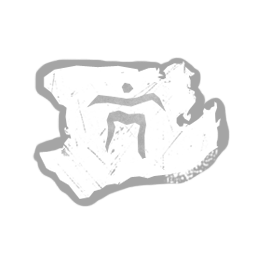 “全视”·白 "All Seeing" - White |
精贵 | 图标 描述 费用 本附加内容已下架（该解锁内容过去已被移除，现已不存在于游戏中。）代表至高实体庇 | 幽灵 |
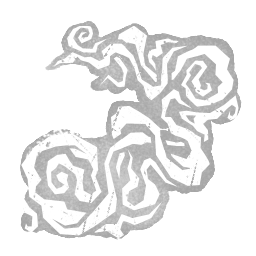 “坏蛋”的最后一口气 "Bad Man's" Last Breath |
传说 | 从被称为“坏人”的疗养院病人身上夺走的强力最后一口气。在护士手中会剧烈震动。以特殊攻击击中逃生者可获得无法侦测状态效果，持续25秒。“坏人的最后一口气”有45秒的冷却时间。 | 女护士 |
| “盲战”·血 "Blind Warrior" - Blood | 传说 | 图标 描述 费用 本附加内容已下架（该解锁内容过去已被移除，现已不存在于游戏中。）代表刀枪不入的 Baikra-Kaeug 符号， | 幽灵 |
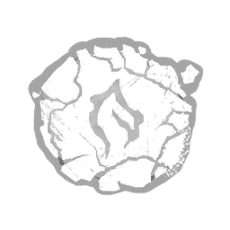 “盲战”·泥 "Blind Warrior" - Mud |
罕见 | 代表凶猛的 Baikra-Kaeug 符号，被人用手指蘸泥涂抹在铃铛表面。被惊袭击中的逃生者将陷入失明状态，效果持续 60 秒。 | 幽灵 |
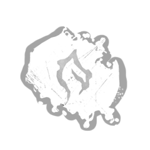 “盲战”·烟灰 "Blind Warrior" - Soot |
稀有 | 图标 描述 费用 此附加品已下架（该解锁物品过去曾被下架，已不存在于当前游戏中。）象征坚不可摧的拜克拉-凯奥格符号是 | 幽灵 |
| “盲战”·魂 "Blind Warrior" - Spirit | 活动 | 图标 描述 费用 此附加品已下架（该解锁物品过去曾被下架，已不存在于当前游戏中。）象征坚不可摧的拜克拉-凯奥格符号取 | 幽灵 |
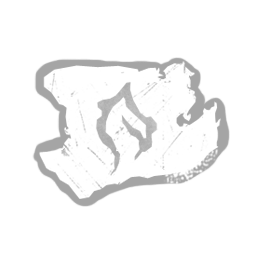 “盲战”·白 "Blind Warrior" - White |
精贵 | 象征凶猛的拜克拉-凯奥格符号以白色墨水盖印在铃身上。被惊袭击中的逃生者将受到出血与肢残状态效果影响，持续70秒。 | 幽灵 |
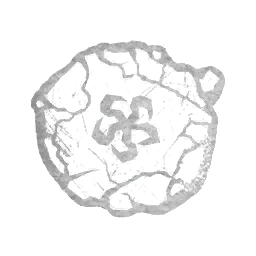 “闪现”·泥 "Blink" - Mud |
罕见 | 象征快速通行的克拉廷符号以手指在铃身上的泥中涂抹而成。隐身时间缩短 -40%。 | 幽灵 |
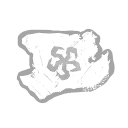 “闪现”·白 "Blink" - White |
精贵 | 象征快速通行的克拉廷符号以白色墨水盖印在铃身上。隐身时间缩短 -60%。 | 幽灵 |
| “冷静”·卡特笔记 "Calm" - Carter's Notes | 传说 | 一种由赫尔曼·卡特医生亲自注解的实验性电击疗法版本。使用深波长以舒缓多种精神疾病。以卡特的电火花为源，此疗法会使患者产生无法控制的恐惧和焦虑。静电爆闪准备就绪时，你的恐惧范围增加+8米。静电爆闪冷却期间，你的恐惧范围减少-8米。受疯狂影响的逃生者会遭受平静折磨：疯狂II：逃生者间歇性地听到远处虚幻的恐惧范围。疯狂III：逃生者持续听到远处虚幻的恐惧范围。“更高质量的癫痫发作会引发紧张性精神症。至少在那段时间里，我能得到片刻安宁。”——赫尔曼·卡特 | 医生 |
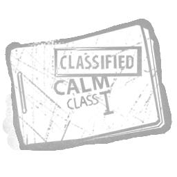 “冷静”·一级 "Calm" - Class I |
稀有 | 一种使用深波长、可舒缓多种精神疾病的电击疗法。以卡特的电火花为源，此疗法可令患者产生轻微焦虑。静电爆闪准备就绪时，你的恐惧范围增加+4米。静电爆闪冷却期间，你的恐惧范围减少-4米。受疯狂影响的逃生者会遭受平静折磨：疯狂II：逃生者间歇性地听到远处虚幻的恐惧范围。疯狂III：逃生者持续听到远处虚幻的恐惧范围。 | 医生 |
| 罕见 | 一种使用深波长、可舒缓多种精神疾病的电击疗法。以卡特的电火花为源，此疗法可令患者产生中度焦虑。静电爆闪准备就绪时，你的恐惧范围增加+6米。静电爆闪冷却期间，你的恐惧范围减少-6米。受疯狂影响的逃生者会遭受平静折磨：疯狂II：逃生者间歇性地听到远处虚幻的恐惧范围。疯狂III：逃生者持续听到远处虚幻的恐惧范围。 | 医生 | |
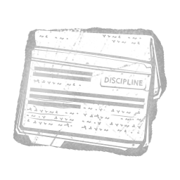 “自律”·卡特笔记 "Discipline" - Carter's Notes |
传说 | 由赫尔曼·卡特医生亲自注解的“觉醒计划”纪律处分电击疗法。难以忍受的高电压使患者陷入严重的偏执状态。电击疗法攻击的引爆延迟减少-0.1秒。受疯狂影响的逃生者会遭受纪律折磨：疯狂II：在追逐期间，逃生者会感知到虚幻的红光和恐惧范围，仿佛你一直紧跟在她们身后。此效果在追逐结束后持续6秒。疯狂III：在任何情况下，逃生者都会感知到虚幻的红光和恐惧范围，仿佛你一直紧跟在她们身后。你与患者的疯狂产生共鸣，可以看见虚幻的红光。“为了避免最顽固的对象复发，进行纪律处分时请使用最大剂量。”——赫尔曼·卡特 | 医生 |
| “自律”·二级 "Discipline" - Class II | 罕见 | 用于纪律处分的“觉醒计划”电击疗法，采用固定剂量的高电压。可使患者产生中度偏执状态。电击疗法攻击的引爆延迟减少-0.06秒。受疯狂影响的逃生者会遭受纪律折磨：疯狂II：在追逐期间，逃生者会感知到虚幻的红光和恐惧范围，仿佛你一直紧跟在她们身后。此效果在追逐结束后持续6秒。疯狂III：在任何情况下，逃生者都会感知到虚幻的红光和恐惧范围，仿佛你一直紧跟在她们身后。你与患者的疯狂产生共鸣，可以看见虚幻的红光。“我们以最大的关怀再教育患者。”——莱里纪念研究所 | 医生 |
| 精贵 | 用于纪律处分的“觉醒计划”电击疗法，采用固定剂量的极高电压。可使患者产生严重偏执状态。电击疗法攻击的引爆延迟减少-0.08秒。受疯狂影响的逃生者会遭受纪律折磨：疯狂II：在追逐期间，逃生者会感知到虚幻的红光和恐惧范围，仿佛你一直紧跟在她们身后。此效果在追逐结束后持续6秒。疯狂III：在任何情况下，逃生者都会感知到虚幻的红光和恐惧范围，仿佛你一直紧跟在她们身后。你与患者的疯狂产生共鸣，可以看见虚幻的红光。“尊重患者是我们原则的核心。”——莱里纪念研究所 | 医生 | |
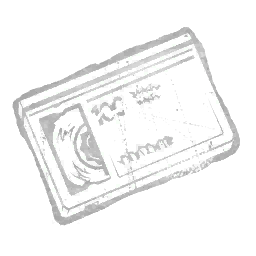 “鬼脸被拍到了” "Ghost Face Caught on Tape" |
活动 | 奥尔森为撰写一篇令罗斯维尔惊恐万分的报道而获得的录像带。在用基础攻击将逃生者置于倒地状态后，立即为夜之幕充能。"在这段影像中，可以看到一个黑影于深夜进入佛罗里达州北罗斯维尔的一栋房屋。次日上午，警方接到报案，称该区域发生了一桩谋杀案。锁好你的门：一名killer就在我们身边，像夜中的幽魂一样四处游荡。"——《罗斯维尔公报》 | 鬼脸 |
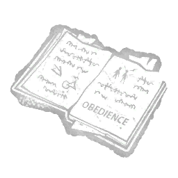 “服从”·三级 "Obedience" - Class III |
罕见 | 一种在迷雾中开发的实验性电痉挛疗法，附有粗糙的注释。额外的电流冲击会导致极度肌肉紧张，耗尽患者的能量。使“清醒过来”的持续时间增加2秒。处于三级疯狂的逃生者会受到疲惫状态效果的影响。 | 医生 |
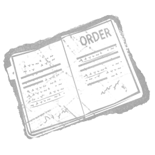 “秩序”·卡特笔记 "Order" - Carter's Notes |
传说 | 一种实验版本的电痉挛疗法，由赫尔曼·卡特医生亲自注释。长时间持续的刺激会使患者陷入严重混乱状态。使“静电冲击”的冷却时间减少3秒。受到疯狂影响的逃生者会遭受秩序之苦：被破坏的木板会随机被倒下或竖立的幻影木板取代，幻影木板在逃生者靠近前会一直存在。每20秒生成新的幻影木板。你能与患者的疯狂产生共鸣，并看到幻影木板。“刺激必须保持在痉挛水平。”——赫尔曼·卡特 | 医生 |
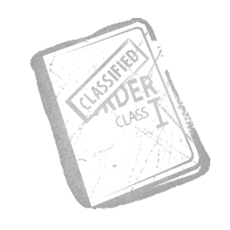 “秩序”·一级 "Order" - Class I |
稀有 | 一种常规电痉挛疗法，是莱里纪念医院患者的日常疗程之一。会使患者陷入轻度混乱状态。使“静电冲击”的冷却时间减少2秒。受到疯狂影响的逃生者会遭受秩序之苦：被破坏的木板会随机被倒下或竖立的幻影木板取代，幻影木板在逃生者靠近前会一直存在。每20秒生成新的幻影木板。你能与患者的疯狂产生共鸣，并看到幻影木板。 | 医生 |
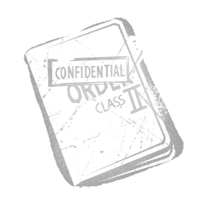 “秩序”·二级 "Order" - Class II |
罕见 | 一种高强度电痉挛疗法，是莱里纪念医院患者的日常疗程之一。会使患者陷入中度混乱状态。使“静电冲击”的冷却时间减少2.5秒。受到疯狂影响的逃生者会遭受秩序之苦：被破坏的木板会随机被倒下或竖立的幻影木板取代，幻影木板在逃生者靠近前会一直存在。每20秒生成新的幻影木板。你能与患者的疯狂产生共鸣，并看到幻影木板。“副作用非常罕见。”——莱里纪念医院 | 医生 |
| “费城” "Philly" | 稀有 | 一台从奥尔森在费城工作时的一名受害者那里偷来的相机。里面的胶卷记录了他在这座城市的最后一夜。标记逃生者所需时间减少10%。“就是喜欢费城：它不断给予、不断给予，而我不想忘记其中任何一点。”——鬼面 | 鬼脸 |
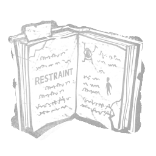 “克制”·卡特笔记 "Restraint" - Carter's Notes |
传说 | 一种在迷雾中开发出的实验性电击疗法，带有粗略的注释。使用难以忍受的刺激波长将患者与医生的思维相连。已知该疗法会引发患者出现严重幻觉。疯狂等级提升一阶的逃生者的气场向你显示3秒。受疯狂影响的逃生者会遭受束缚之苦：幻影医生的持续时间增加+6秒。你与患者共享疯狂，可以看到幻影医生。"我能看见他们恶心的疾病。"——匿名笔记，可能出自赫尔曼·卡特 | 医生 |
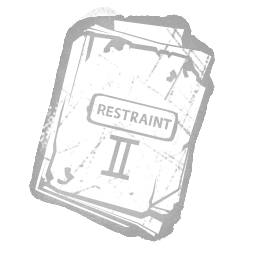 “克制”·二级 "Restraint" - Class II |
罕见 | 一种在迷雾中开发的实验性电痉挛疗法。使用的波长将患者与医生的意识相连。已知该疗法会导致患者出现轻度幻觉。疯狂等级提升一级的逃生者的气场会向你显示1秒。受到疯狂影响的逃生者会遭受约束之苦：使幻影医生的持续时间增加6秒。你能与患者的疯狂产生共鸣，并看到幻影医生。 | 医生 |
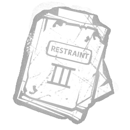 “克制”·三级 "Restraint" - Class III |
精贵 | 一种在迷雾中开发出的实验性电击疗法。使用高刺激波长将患者与医生的思维相连。已知该疗法会引发患者出现严重幻觉。疯狂等级提升一阶的逃生者的气场向你显示2秒。受疯狂影响的逃生者会遭受束缚之苦：幻影医生的持续时间增加+6秒。你与患者共享疯狂，可以看到幻影医生。 | 医生 |
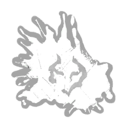 “影舞”·血 "Shadow Dance" - Blood |
传说 | 象征黑暗协同的Yiwarick符号，以鲜血印在钟体上。隐身状态下，破坏可破坏墙壁、木板、发电机、窗户的动作速度提高+60%。 | 幽灵 |
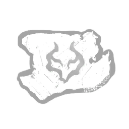 “影舞”·白 "Shadow Dance" - White |
精贵 | 象征黑暗协同的Yiwarick符号，以白色墨水印在钟体上。隐身状态下，破坏可破坏墙壁、木板、发电机、窗户的动作速度提高+40%。 | 幽灵 |
| “迅猎”·血 "Swift Hunt" - Blood | 传说 | 象征急速扑向猎物的Kuntin-Takkho符号，以鲜血印在钟体上。解除隐身的时间缩短-12%。 | 幽灵 |
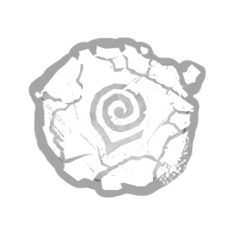 “迅猎”·泥 "Swift Hunt" - Mud |
罕见 | 象征急速扑向猎物的Kuntin-Takkho符号，以手指沾泥画在钟体上。解除隐身的时间缩短-8%。 | 幽灵 |
| “迅猎”·烟灰 "Swift Hunt" - Soot | 稀有 | 图标 描述 价格 此附加品已退役（此解锁物在过去已退役，在当前游戏中已不存在。）象征急速扑向猎物的Kuntin-Takkho符号，以鲜血印在钟体上。 | 幽灵 |
| “迅猎”·白 "Swift Hunt" - White | 精贵 | 减少解除隐身时间10%。 | 幽灵 |
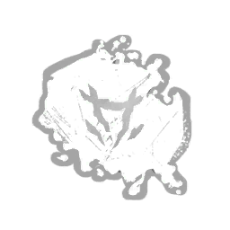 “野兽”·烟灰 "The Beast" - Soot |
稀有 | 你的恐惧范围在隐身时被抑制。为追踪和突袭得分事件提供+100%额外血点。 | 幽灵 |
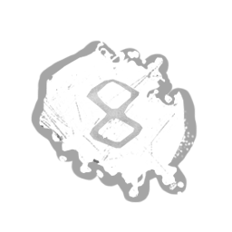 “幽灵”·烟灰 "The Ghost" - Soot |
稀有 | 你的恐惧范围和红色污渍在解除隐身后再被抑制6秒。 | 幽灵 |
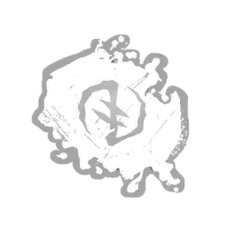 “猎犬”·烟灰 "The Hound" - Soot |
稀有 | 当隐身时，血池呈鲜红色。 | 幽灵 |
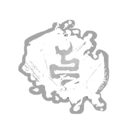 “毒蛇”·烟灰 "The Serpent" - Soot |
稀有 | 破坏可破坏墙壁、木板和损坏未完成发电机的动作。 | 幽灵 |
| “风暴”·血 "Windstorm" - Blood | 传说 | 增加你隐身状态下的移动速度9%。 | 幽灵 |
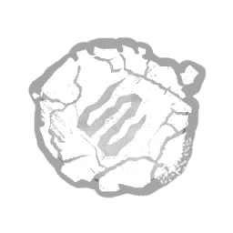 “风暴”·泥 "Windstorm" - Mud |
罕见 | 描绘咆哮风暴的Ohuwe-Onmnea符号，以泥浆手指绘于钟体之上。隐身状态下移动速度提高+5%。 | 幽灵 |
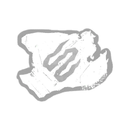 “风暴”·白 "Windstorm" - White |
精贵 | 描绘咆哮风暴的Ohuwe-Onmnea符号，以白色墨水印于钟体之上。隐身状态下移动速度提高+7%。 | 幽灵 |
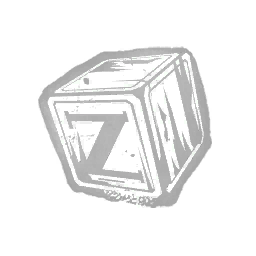 “Z”积木 "Z" Block |
传说 | 一块被深深划伤并烧毁的木块，唯一可辨认的特征是字母“Z”。梦境陷阱或梦境木板的气场暴露3秒。 | 梦魇 |
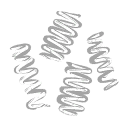 四圈弹簧套件 4-Coil Spring Kit |
罕见 | 用于捕兽夹的替换套件，将常见的双弹簧系统改为四组螺旋弹簧，大幅增强捕兽夹的握持力。捕兽夹的解除时间增加 +33%。 | 设陷者 |
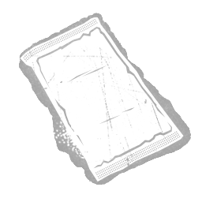 腹部绷带 Abdominal Dressing |
传说 | 一种高吸收性垫片，敷在较大的腹部伤口上可防止体液渗漏。 使医疗箱的治疗速度提高 +15%。 | |
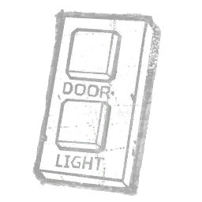 检修面板 Access Panel |
传说 | "控制安全门是完成任务的关键。"为消防斧解锁一项特殊能力：消防斧可以穿过安全门，并直接从相连的安全门穿出。瞄准消防斧时，你获得以下效果：任何安全门6米内的逃生者触发杀手本能。 | 机械人偶 |
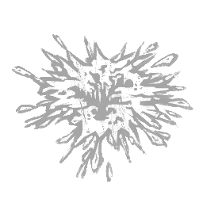 酸性血液 Acidic Blood |
活动 | 受损时，异形独特的生理结构使其比以往更加致命。在爬行者模式下，你离开隧道后的20秒内，每当有逃生者以任何方式击晕你，将适用以下效果之一：健康逃生者：移除1点生命状态 受伤逃生者：施加深度伤口状态效果。"我觉得我们该谈谈奖金的问题。"——帕克 | 异形 |
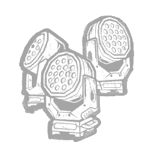 自适应照明 Adaptive Lighting |
罕见 | 无人机勘察周围区域，以令人迷惑的方式投射灯光，扰乱移动的判断。使难以察觉状态效果持续时间增加 +20%，达到 9.6 秒。 | 骷髅商人 |
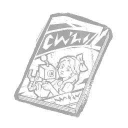 《勇敢瓦伦蒂》第1期 Adi Valente Issue 1 |
稀有 | 阿迪·瓦伦特第一期原始副本，阿德里亚娜小时候父亲创作的漫画。被利爪陷阱夹住的逃生者技能检验成功区域缩小 -20%。 | 骷髅商人 |
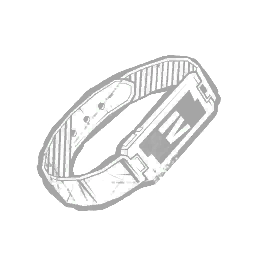 管理腕带 Admin Wristband |
罕见 | 设施管理员使用的电子雨伞手环。既能开启安全区域的权限，也能兼作追踪装置。增加僵尸的逃生者探测范围 +4 米。增加僵尸的视野范围 +17.5°。 | 复仇女神 |
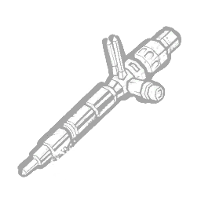 肾上腺素注射器 Adrenaline Injector |
罕见 | 一种能强化感官、让身体做好战斗准备的激素。增加逃生者使用疫苗后杀手本能的持续时间 +3 秒。 | 复仇女神 |
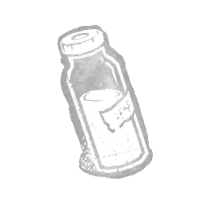 肾上腺素小瓶 Adrenaline Vial |
精贵 | 从一名不情愿的受试者肾上腺中摘除的激素。它能带来一阵 energies 般的能量冲击，却也可能让使用者疲惫。可用力量代币数量 +2。冲刺期间移动速度 +5 %。冲刺期间最大视角转动幅度 +20 °。冲刺期间转身速度 -0.5 °/s。「求你了，别这样……」 | 枯萎者 |
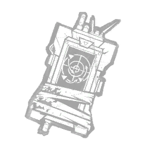 高级移动预测 Advanced Movement Prediction |
传说 | 即使他们离开了受影响区域，精细化的人工智能程序也能高精度预测一个人的下一步去向。被利爪陷阱夹住的逃生者气场向你显示 6 秒。 | 骷髅商人 |
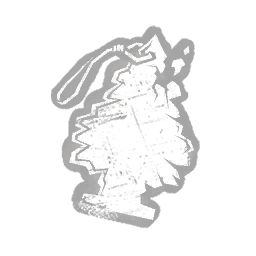 空气清新剂 Air Freshener |
罕见 | 她的父母被找到后，这是警方归还的随身物品袋中的一件。海迪不知道为何要保留它。可将可用的力量印记数量提升至4个。 | 深潜者 |
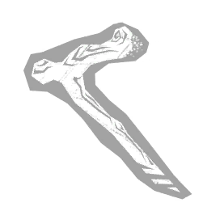 秋田的拐杖 Akito's Crutch |
传说 | 卡赞的儿子从树上摔下后所用的拐杖。秋人的玩伴及其家人因男孩的伤势而受到惩罚。恶魔冲刺期间你的移动速度提高1米/秒。 | 鬼武者 |
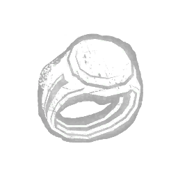 炼金术士戒指 Alchemist's Ring |
传说 | 一枚授予伦敦医学院毕业生的戒指。它提醒着人们不加节制的野心。每有一次连续完成致命冲刺，冲刺持续时间 +20 %。「该学生被控掘墓，意图进行未经许可的科学研究。」——塔尔博特·格里姆斯学监训诫，1838 年 | 枯萎者 |
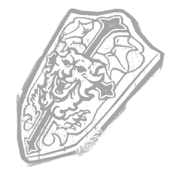 阿卡萨之盾 Alucard's Shield |
活动 | “一件家传宝物，能在每个回合阻挡其持有者的敌人。” 出口闸门的阿卢卡尔德之盾每次触发其效果时：使出口闸门内的区域持续生成火焰柱。“啊，但这个世界邀请了我。你们自己的同类以赞美与致敬召唤了我。”——德古拉 | 黑暗领主 |
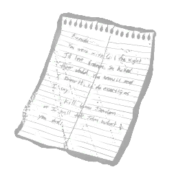 阿曼达的信 Amanda's Letter |
活动 | 一封写给阿曼达的勒索信。令读者充满愤怒与专注。蹲伏时，16米范围内的逃生者气场暴露给你。可携带的反向捕兽夹数量减少-2。“阿曼达，吉尔失去吉迪恩那晚你和塞西尔在一起。你杀了他们的孩子。你知我知。”——霍夫曼侦探 | 猪女 |
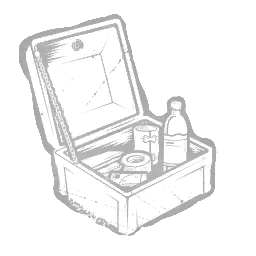 阿曼达的秘密 Amanda's Secret |
传说 | 一个黑色金属盒，里面装着一把刀和各种医疗用品，如绷带和敷布。深深的伤口减轻压力并唤醒感官。逃生者移除其反向捕兽夹时会触发巨响噪音提示，并暴露其气场6秒。 | 猪女 |
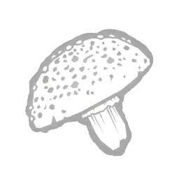 毒蝇伞毒素 Amanita Toxin |
稀有 | 一种来自鹅膏菌的毒素，涂抹在飞斧的斧刃上。它能使思维麻木。被飞斧击中的逃生者承受致盲状态效果，持续60秒。 | 女猎手 |
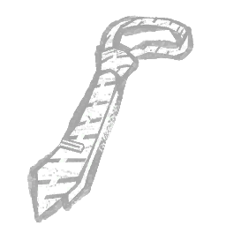 阿蒙的领带 Amon's Necktie |
精贵 | 冷酷、精于算计、精准。他牢牢掌控着每一种局面。在腾跃中途瞄准时，获得以下效果：显示32米内的木板与窗户气场。 | 食尸鬼 |
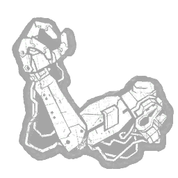 仿生手臂 Android Arm |
罕见 | 摧毁其他 HUX 单元不仅使其更容易灭绝人类，也为其提供了更多可用的零件。使时间滑流在逃生者之间的传播距离增加 +2 米。使时间滑流在逃生者之间的传播速度增加 +25%。 | 奇点 |
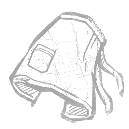 安帖库围裙 Anteiku Apron |
稀有 | 一家可爱小咖啡店的标准制服。赫子腾跃后的滑行距离缩短50%。 | 食尸鬼 |
| 抗疲惫注射器 Anti-Exhaustion Syringe | 活动 | "一种能令身心重焕活力的神秘液体。" 使用医疗箱时，按下辅助操作按钮触发以下效果： 使受影响的逃生者立即从疲惫状态效果中恢复。 抗疲惫注射器在使用后消耗医疗箱。 | |
| 焦灼喘息 Anxious Gasp | 精贵 | 从疗养院病人玛丽·詹纳（也就是护士钟爱的“焦虑女孩”）身上收集到的惊讶喘息。在护士触碰时会剧烈抽动。传送时接近1米内的逃生者会尖叫并暴露位置。获得200血点（阴险类别）。 | 女护士 |
| 青桐树长袍 Aogiri Tree Robe | 精贵 | 由反人类食尸鬼组织穿着的服装。每当一台发电机被修复并进入暴怒模式时，获得以下效果：获得无法侦测状态效果，持续20秒。 | 食尸鬼 |
| 顶点消音器 Apex Muffler | 传说 | 一件工艺精湛、性能超越其他同类产品的电锯消音器。恐惧范围外的所有逃生者无法听到电锯声。 | 电锯莽夫 |
| 艾什的内脏 Ash's Innards | 罕见 | 尽管更加坚韧，机械造物在足够的力量下也会损毁。遥控火焰炮台的重生计时增加15秒。 | 异形 |
| 灰烬苹果 Ashen Apple | 精贵 | 一个剥了皮的苹果，裹上了圣化的灰烬。食用这样的水果可以驱散亡者那些心怀恶意的嫉妒幽魂。生成 1 个处于腐化（Corrupted）状态的信仰池。可获得的信仰池数量 +1。 | 瘟疫 |
| 共济失调呼吸 Ataxic Respiration | 精贵 | 从被称为“紧张症男孩”的疗养院病人身上收集到的紊乱且逐渐衰弱的呼吸。通常稳定而平静，但在护士触碰时会变得极度躁动。使疲惫的持续时间减少-7%。 | 女护士 |
| 奥罗拉的遥感受器 Aurora's Telereceptor | 罕见 | “无人应使用异端制造的卑劣装置凝视深渊。”——《论异端》卷三，第十二章：获得异端的逃生者气场暴露 4 秒。他们同时也能看到你的气场 4 秒。异端者额外看到你的气场时间 +2 秒。 | 审判 |
| 自动绘图仪 Automatic Drawing | 罕见 | 卡米娜在无意识状态下构思的实验性画作。不要思考——行动。闲置的凶鸦消散后，折磨之鸟的冷却时间减少 -1.5 秒。 | 艺术家 |
| 自动螺丝刀 Automatic Screwdriver | 罕见 | 在行动中快速进行机械调整的好方法。未命中切片与骰子攻击后，躲猫猫模式的冷却时间减少 -8%。 | 好人 |
| 获奖辣椒 Award-winning Chilli | 传说 | 一大碗以优质肉类闻名的辣味辣椒。每消耗一个印记，电锯冲刺的持续时间增加+0.2秒。电锯冲刺窗口的持续时间增加+0.2秒。“秘密在于肉”——德雷顿·索耶 | 食人魔王 |
| B级片海报 B-Movie Poster | 精贵 | “有传言称这部电影是由政府出资制作的宣传片，专门为某个名为‘苹果派计划’的东西而拍摄。” 受到 UVX 伤害的幸存者会产生以下效果：施加破裂状态，持续30秒。 | 未知者 |
| 最好的朋友 BFFs | 传说 | 一条异常冰冷的银质项链，分成四段，四位挚友各持一段。被链式狂暴打击命中的逃生者会为“挚友(BFFs)”积累印记：第一次狂暴打击获得 0 印记。第二次狂暴打击获得 +2 印记。第三次狂暴打击获得 +3 印记。第四次狂暴打击获得 +4 印记。第五次狂暴打击获得 +5 印记。一旦“挚友(BFFs)”积累 15+ 印记，你将获得以下效果：在未使用“狂暴猛袭”时获得 +6% 急速状态效果。 | 军团 |
| 乳牙 Baby Teeth | 罕见 | 维克托很久以前掉落的两颗牙齿。它们异常锋利。逃生者移除维克托后，将承受失明状态效果，持续 30 秒。 | 双胞胎 |
| 坏蛋的纪念物 Bad Man Keepsake | 罕见 | 从“紧张症男孩”冰冷的死手中扯下的一颗腐烂臼齿。通常稳定而平静，但在护士触碰时会变得极度躁动。被特殊攻击命中的逃生者，其气场会在60秒内于你位置28米范围内暴露。 | 女护士 |
| 一袋齿轮 Bag of Gears | 精贵 | 一些机械零件，可用来制作具有挑战性的竖锯盒子，并让反向捕兽夹更容易安装。安装反向捕兽夹时，齿轮袋施加其主要效果：你的行动速度提高 +50%。逃生者搜索竖锯盒子时，齿轮袋施加其次要效果：他们的行动速度降低 -14%。 | 猪女 |
| 次元袋 Bag of Holding | 传说 | “领域本身屈从于其惊人的能力，在试炼中增添更多可掠夺之物。”打开宝箱的逃生者会受到以下效果影响：施加浑然不觉状态效果，持续 15 秒。环境中至少有 2 个宝箱的骰子点数将掷出 1 点。 | 巫妖 |
| 缠布斧柄 Bandaged Haft | 稀有 | 紧密缠绕并固定在飞斧斧柄上的急救绷带。连续投掷飞斧之间的冷却时间减少-10%。 | 女猎手 |
| 绷带 Bandages | 稀有 | 一包通常在急救箱中能找到的绷带。可用治疗充能增加 +8。 | |
| 芭比的眼镜 Barb's Glasses | 罕见 | 一副破碎的眼镜，它曾随之前往颠倒世界。使用撕裂攻击破坏可破坏墙壁/木板时，攻击冷却时间减少10%。 | 俄摩拉虫 |
| 刺铁丝 Barbed Wire | 传说 | 柔韧的美国钢材，内衬锋利的倒钩。尽管其貌不扬，迦勒发现它可以缠绕在长矛上以增强其凶残程度。逃生者的治疗时间增加 +3.5 秒。“很快就不会有什么值得恐惧的了。在那之前，恐惧我吧。” —— 迦勒·奎恩 | 死神之枪 |
| 大麦粉 Barley Meal | 罕见 | 平淡却能让人精神焕发的粥品的关键原料。初始追逐路径长度提升 +20%。 | 猎犬主人 |
| 破旧磁带 Battered Tape | 精贵 | 额外的羊皮纸松散地挂在地图上，用胶带匆忙固定。修改地图，获得以下效果：其最大范围增加 +8 米。 | |
| 电池 Battery | 稀有 | 一节未知品牌的标准电池。电池寿命增加 +2 秒。“另一节几乎没电的电池。” | |
| 战斧头 Battle Axe Head | 罕见 | 桑德·罗尔特是个巨人般的人，外形和举止都令人恐惧。召唤“屠夫”后的冷却时间减少 -20%。 | 骑士 |
| 湾岸的雪茄 Bayshore's Cigar | 传说 | 一支上等雪茄，取自迦勒老板的上衣口袋，当时他正因腹部被长矛刺穿而哀嚎。逃生者挣脱“救赎者”时的眩晕持续时间减少 -0.75 秒。“别把那东西指向我，你这个蠢货。” —— 亨利·贝肖尔 | 死神之枪 |
| 湾岸的金牙 Bayshore's Gold Tooth | 精贵 | 一颗金牙，从亨利·贝肖尔口中拔下，当时他正尖声求饶，几小时后他便被了结。救赎者的收卷速度增加 +5 %。“认清你的位置，小子。认清你该死的位置。” —— 亨利·贝肖尔 | 死神之枪 |
| 串珠迷宫 Bead Maze | 稀有 | “一种用于启迪被囚儿童心智的成长玩具。”修改世界破坏者并赋予以下效果：每有一名存活逃生者，世界破坏者计时器的第二阶段增加2.5秒。 | 先驱者 |
| 熊油 Bear Oil | 稀有 | 熔化的动物脂肪，可为捕兽夹吱呀作响的关节提供润滑。放置捕兽夹时悄无声息。 | 设陷者 |
| 污损链条（巴布的链锯） Begrimed Chains (Bubba's Chainsaw) | 精贵 | 这条链子沾满了恶臭物质，任何接触它的人都会变得虚弱。被巴布的电锯击中的逃生者会掉落所携带的任何物品。 | 食人魔王 |
| 精贵 | 一条恶臭却莫名熟悉的链条，涂有令人不适的物质。被电锯击中的逃生者将受到出血与重伤状态效果影响，持续70秒。 | 电锯莽夫 | |
| 污损斧头 Begrimed Head | 传说 | 这把飞斧斧头沾染了一种污秽物质，凡被其触及者都会陷入虚弱。被飞斧击中的逃生者承受出血与重伤状态效果，持续80秒。 | 女猎手 |
| 绳耳销 Belaying Pins | 罕见 | 非常适合用来握持绳索、固定绳结以及张挂船帆。使受犬吠感知影响的逃生者同时获得 20 秒的盲目状态效果。 | 猎犬主人 |
| 弯钉 Bent Nail | 稀有 | 一枚深深扎入拉里·科顿手掌的普通钉子。伤口虽然很浅，却就此引发了一连串骇人的事件。使连锁束缚分数事件获得 +100% 额外血脉点。在逃生者被附身连锁攻击命中时，生成的额外连锁数减少至 +1。 | 地牢修女 |
| 弯折车轮 Bent Wheel | 稀有 | 「致命一击过后，受害者的轮椅就只剩下这些了。」使惊吓的触发范围增加4米。 | 杀戮者 |
| 白蝰毒素 Berus Toxin | 稀有 | 图标 描述 费用 此附件已被下架 （此解锁内容过去曾被下架，当前游戏中已不存在。） 取自贝鲁斯之蛇的毒素，涂抹在邪恶化身的斧刃上 | 女猎手 |
| 黑盒 Black Box | 活动 | 一个装满照片的黑色纸板箱。出口大门开启后，会让处于睡眠状态的逃生者继续沉睡15秒。这些逃生者苏醒后，该效果仍会残留3秒。 | 梦魇 |
| 黑心 Black Heart | 稀有 | 一颗从颠倒世界触手生物胸腔中撕下的黑色发酵心脏。成功使用撕碎攻击命中逃生者时，攻击冷却时间缩短 -10%。 | 俄摩拉虫 |
| 黑香 Black Incense | 活动 | 一团由锋利骨屑调制而成的深色糊状物。吸入它污浊的烟气可磨砺心智之眼。带有光环的受感染求生者将对你显现 3 秒。 | 瘟疫 |
| 黑火药 Black Powder | 精贵 | 此附加品未使用，描述未知。使爆炸半径增加5米。 | |
| 黑带 Black Strap | 稀有 | 一条用于将受害者束缚在金属框架上的尼龙束带。其颜色使浸透其中的血迹难以被察觉。修改"天罚"的效果：宽度增加 +25%。射程缩短 -25%。 | 刽子手 |
| 黑寡妇蜘蛛 Black Widow Spider | 传说 | 一只不再只是幻觉的恐怖蜘蛛。在世界破坏者模式下使用颠倒世界时，释放你读取光环的潜能：36米范围内的光环对你显现3秒。 | 先驱者 |
| 发黑脚趾甲 Blackened Toenail | 稀有 | 在卡赞百次冬季徒步前往寺庙的途中掉落。尽管他虔诚朝圣，秋人的腿再也无法痊愈。吸收模式下你的移动速度提高0.4米/秒。“若父亲不为子女牺牲，那他养育的又是谁呢？”——《莲次郎教义》11:12 | 鬼武者 |
| 铁匠锤 Blacksmith's Hammer | 传说 | 在他们手中，一切都是武器。在猎杀行动中被守卫伤害的逃生者将承受 60 秒的“破碎”状态效果。 | 骑士 |
| 受祝福的苹果 Blessed Apple | 罕见 | 一颗熟透透的水果，用于在净化仪式中解除禁食。美味。生成 1 个处于腐化状态的信仰池。 | 瘟疫 |
| 枯萎血清 Blight Serum | 常见 | 此附加品已不再可用。少量三十四号化合物——枯萎者在变异前研制的最终血清。高剂量会导致极端突变。扮演枯萎者时：为他的力量额外获得 1 个印记。扮演其他杀手时：枯萎血清会暂时将你的力量替换为枯萎冲刺能力。按下力量键，以默认移动速度的 200% 向前冲刺 2.5 秒。试炼开始时拥有 1 个印记。每次逃生者被钩住时获得 1 个印记。 | K00 |
| 枯萎乌鸦 Blighted Crow | 精贵 | 一只被腐化血清 grotesquely 突变而死的乌鸦。每有一次连续完成致命冲刺，冲刺期间移动速度可叠加 +3 %。 | 枯萎者 |
| 枯萎老鼠 Blighted Rat | 罕见 | 一只被注射腐化血清后短暂复生、变得狂暴而难以控制的老鼠。每有一次连续完成致命冲刺，冲刺期间移动速度可叠加 +2 %。 | 枯萎者 |
| 虔信者眼罩 Blindfold of the Devoted | 精贵 | “追随格哈特之路者须蒙上双眼，以铭记他为预言所作的牺牲。”——（《论异端》第三卷，第61章）将上钩次数最少的逃生者放逐后，将揭示32米外所有其他上钩次数最少的逃生者的气场，持续5秒。 | 审判 |
| 金发 Blond Hair | 稀有 | "一根略带波浪的金发。" 处于跟踪模式时，你获得以下效果：抓痕与血池的持续时间增加 +100%。 | 变形者 |
| 血琥珀 Blood Amber | 活动 | "血红色的琥珀，表面布满黑色纹路。琥珀触手温热。" 为钥匙带来以下效果：其显形时间减少 -6 秒。其使用次数减少 -2 次。使用钥匙期间会产生以下效果：你的光环对 killers显形。 | |
| 盛血高脚杯 Blood-Filled Goblet | 罕见 | 受害者的鲜血维系着他，使他成为更强大的猎手。修改气味球，效果如下：延长其存在时间 +60%。 | 黑暗领主 |
| 血渍手帕 Blood-Stained Handkerchief | 罕见 | 即使是滴鲜血也能激起任何美食家的感官。赫子跃击的最大距离增加+1米。 | 食尸鬼 |
| 血染泥土 Bloodied Mud | 精贵 | 一把泥土，其中夹杂着深红色的纹路。血色的层次强化了这把泥土。幻影陷阱的触发范围减少30%。 | 女巫 |
| 血染污水 Bloodied Water | 罕见 | 盛在被折叠的睡莲叶中的被污染的水。幻影陷阱的触发范围减少20%。 | 女巫 |
| 血染黑头罩 Bloody Black Hood | 罕见 | 一个曾狩猎夏洛特的人所戴的兜帽。很快，他成了猎物。将切换回夏洛特时的过渡时间减少 -0.5 秒。 | 双胞胎 |
| 血色围脖 Bloody Boa | 罕见 | 一条智云搭在受害者被割开的脖颈上的羽毛围巾。里面藏着许多口袋。使切割消退速度降低75%。 | 小丑女 |
| 血腥弹簧圈 Bloody Coil | 活动 | 既黏腻又湿滑，这种阴森的液体让设陷者的捕兽夹更加危险。当健康状态的逃生者拆除捕兽夹时，血腥锁链会索取代价，使该逃生者进入受伤状态 | 设陷者 |
| 带血的指甲 Bloody Fingernails | 精贵 | 贞子沾血的指甲，在她试图从井中爬出时掉落。这是她一心只想杀戮的证据。投影后的加速效果持续时间+50%。 | 般若 |
| 带血发饰 Bloody Hair Brooch | 精贵 | 用于束住狂野头发的丝绸蝴蝶结。大幅提升山冈的作祟激活充能速度（50%）。 | 怨灵 |
| 血污杂志 Bloody Magazine | 传说 | 飞溅的血液讲述了一场残酷屠杀的故事。当钩状尖刺落空时，钩状尖刺落点区域8米范围内的所有逃生者尖叫并暴露其气场，持续3秒。 | 杀戮者 |
| 带血溜冰鞋 Bloody Roller Skate | 罕见 | 十一曾经拥有的怒意的纪念品。强化地道攻击，产生以下效果：获得20%急速状态效果，持续1.5秒。 | 先驱者 |
| 血染腰布 Bloody Sash | 罕见 | 来自一个称卡赞为“高贵的冒名者”的男孩的血液。卡赞向父亲隐瞒了打斗的证据，时常在暗处对着那条饰带沾沾自喜。吸收模式下你的移动速度提高0.7米/秒。 | 鬼武者 |
| 血之微笑 Bloody Smile | 罕见 | 他的脸被砸到树上之后就不太高兴了。惊吓与无处不在的邪恶的侦测范围增加 +4 米。 | 杀戮者 |
| 蓝裙 Blue Dress | 精贵 | 一条小女孩的淡蓝色连衣裙，带有白色蕾丝，正面被大面积的刀痕毁坏。使可放置的“梦魇陷阱”数量减少至 1 个。放置时，“梦魇陷阱”变为固定不动。使“梦魇陷阱”在 8 秒后自动消失。 | 梦魇 |
| 模糊照片 Blurry Photo | 稀有 | “那张照片是在一处废弃营地被发现的。那些露营者从此再没人见过。” 修改传送技能，产生以下效果：传送后恢复至完全移动速度的恢复速率提升+7%。 | 未知者 |
| 船钥匙 Boat Key | 传说 | 只有一艘船允许人们上下岛，钥匙被藏起来以防逃兵。白天期间，你的传送速度提高+3米/秒。使柜子、逃生大门上所有生效中的锁具…… | 深潜者 |
| 沼泽水 Bog Water | 稀有 | 来自另一个时代的浑浊液体，盛于一只玻璃药瓶中。使幻影陷阱的触发范围减少 -10%。 | 女巫 |
| 骨铃 Bone Clapper | 罕见 | 由一块打磨得极为光亮的骨头制成的铃舌。令哀鸣之铃的声音产生混乱的回响与扭曲。逃生者无法分辨哀鸣之铃的距离与方向。 | 幽灵 |
| 邦尼的吉他弦 Bonnie's Guitar Strings | 精贵 | 「走了音、随时可能崩断的旧琴弦。」解锁你在安全门之间移动时的灵侦能力潜力：提升发电机灵光的强度。在传送到安全门后离开该安全门时，施加以下效果：使「难以察觉」状态效果的持续时间减少 -100%，缩短至 0 秒。该状态效果将被立即移除。 | 机械人偶 |
| 疾行靴 Boots of Speed | 精贵 | 轻轻一蹬鞋跟，便让穿戴者获得惊人的速度。施放法师之手法术后，获得以下效果：获得+3%急速状态效果，持续2秒。 | 巫妖 |
| 一瓶氯仿 Bottle of Chloroform | 精贵 | “一种带有甜味的有机化合物，具有很强的麻醉能力。” 修改药酒，获得以下效果：气体云的尺寸和扩散范围提高 +20%。 | 小丑 |
| 男友的备忘录 Boyfriend's Memo | 稀有 | "一张'浪漫'、略带挑逗意味的便条，被特意留下以引起一位女性情人的注意。" 尾随能力获得以下效果：尾随范围增加 +8 米。"便条上的署名是：D。" | 变形者 |
| 编织小饰品 Braided Bauble | 精贵 | "四根纤细却结实的绳索，以精湛的手法相互缠绕在一起。" 为钥匙带来以下效果：其读取光环的持续时间增加 +2 秒。 | |
| 崭新零件 Brand New Part | 活动 | 这个精密的机械部件让人感觉格格不入。它干净锃亮，仿佛刚从工厂出厂。站在发电机旁按下“使用物品”按钮：安装崭新零件动作：触发一次困难技能检验。技能检验成功后，该发电机的修理需求永久降低-10电量。崭新零件在使用时被消耗。 | |
| 黄铜壳打火机 Brass Case Lighter | 精贵 | 一个用来点燃麻烦的打火机。逃生者在关闭传送门期间受到致盲状态效果影响。该效果持续 60 秒。“它散发出强大的电磁场：必定接触过颠倒世界。”——霍金斯国家实验室 | 俄摩拉虫 |
| 布雷特的帽子 Brett's Cap | 罕见 | 这顶诺斯特罗莫棒球帽虽然时尚，但严重限制了他的垂直视野。每当遥控火焰炮台生效时，使炮台位置16米范围内的所有逃生者承受致盲状态效果，持续25秒。 | 异形 |
| 布莱恩的肠 Brian's Intestine | 稀有 | 瑞迪恩警局局长布莱恩·艾恩斯的小肠。对僵尸而言是诱人的景象。增加僵尸的移动速度 +0.25 米/秒。 | 复仇女神 |
| 破损灯泡 Broken Bulb | 常见 | 此附加品已不再供应 一只损坏的灯泡，会产生诡异闪烁的效果。会使手电筒闪烁。光束亮度增加 +15%。成功致盲的持续时间增加 +30%。惊吓程度提升。破损灯泡仅在万圣节期间活动中提供。 | |
| 断链 Broken Chain | 罕见 | 一旦他终于发挥出自己的全部潜力，就没什么能束缚他。在暴怒模式之外，每个印记使赫子跃击的冷却时间减少1.4秒。 | 食尸鬼 |
| 破碎洋娃娃 Broken Doll | 精贵 | 追随者们带着家人来到一个乌托邦生活。无人幸免。入夜的持续时间延长+20秒。 | 深潜者 |
| 断裂的剑柄 Broken Hilt | 精贵 | 新武器是干净的，甚至是精准的；用破损武器攻击则是恶毒而绝望的。被守卫伤害的逃生者将承受 70 秒的“出血”和“重伤”状态效果。 | 骑士 |
| 破损恢复币 Broken Recovery Coin | 传说 | 一枚描绘着被月桂花环环绕之鸟的硬币。已被折成两半。减少补给箱的数量 -1。"我想象中的第一天不是这样的。"——里昂·斯科特·肯尼迪 | 复仇女神 |
| 损坏的安全钥匙 Broken Security Key | 稀有 | 船上的设备应用了数十项安全措施，其中许多都已年久失修。使被禁用的生物舱的重启计时器减少 -15%。 | 奇点 |
| 破滑板 Broken Skateboard | 传说 | 一种炫酷的移动方式，被愤怒的兄弟砸得粉碎，作为一种控制手段。强化世界破坏者，产生以下效果：世界破坏者模式激活时，以下效果触发，持续65秒：翻越速度提高30%。板车、窗户32米 | 先驱者 |
| 破碎王冠 Broken Tiara | 稀有 | “一件法老之女佩戴过的华丽舞台道具，既引人分心，又显虚假。”修改发光真菌：使处于其效果影响下的逃生者受到浑然不觉状态效果影响。 | 浮屠鬼 |
| 布朗噪声发生器 Brown Noise Generator | 精贵 | 无人机发出不祥的嗡鸣，笼罩整个声场，令人难以听到其他声音。被利爪陷阱夹住的逃生者受到浑然不觉状态效果影响。 | 骷髅商人 |
| 鹿弹 Buck Shot | 稀有 | 此附加品未使用，描述未知。使障目持续时间增加1.5至2.5秒。使失聪状态效果的持续时间增加0至2秒。 | |
| 扩音喇叭 Bullhorn | 罕见 | 对着这台装置吼出的命令激怒了某些人，也让另一些人迷失了方向。 逃生者使用急救喷雾后受到遗忘状态影响，持续30秒 | 幕后黑手 |